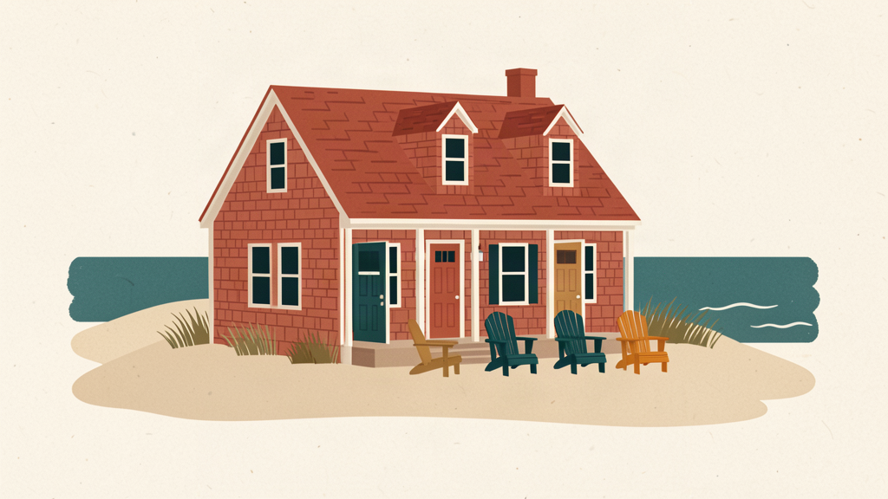

Inheriting a vacation home with siblings: making a schedule that works

Short answer
When siblings inherit a vacation home, agree on who shares it, how much time each sibling's household gets, how holidays and unused nights work, and who looks after the house. Write the answers down. Ownership, tax, and estate questions are separate and belong with a lawyer or tax advisor.
When parents leave a vacation home to their children together, the house often stays in the family for one simple reason: nobody wants to be the one who sells it. Keeping it means something new, though. A house that one couple used however they liked now has two, three, or four households who all want to use it, often in the same weeks.
This guide covers the part of that change most families can handle themselves: agreeing how the house gets used. It does not cover ownership, taxes, titles, or estates. Those questions are important, they depend on where you live, and they belong with a lawyer or tax advisor.
Start with what you already agree on
Most siblings agree on more than they expect. Before anyone discusses dates, ask each sibling two questions:
- Do you want to keep using the house?
- Roughly how often, and when?
The answers tell you whether you are planning a shared calendar for everyone or a different arrangement, such as one sibling using the house most and the others visiting. Both are common. It is better to know which one you have before setting rules.
The scheduling questions to settle first
Who shares the house?
Most siblings share by household: one group per sibling, with spouses and children booking inside that group's time. Decide early whether a grown child who starts their own family later gets their own time or stays inside a parent's group.
How much time does each group get?
This is the question most likely to cause trouble later, so settle it plainly. There are three common answers:
- The same for every group. Simplest, and the most common starting point.
- By ownership share. If one sibling owns half the house, that group gets half the time.
- By household size. A sibling with three grown children's families may get more time than a sibling who comes alone.
Owning, using, and paying are three different things, and families change over the years. Agree which one your time follows.
How do you divide the calendar?
Pick one approach: fixed weeks, taking turns in a rotation, drafting dates, booking as you go with limits, or matching everyone's preferences. Our guide to sharing a vacation home with family compares all five.
How do holidays work?
The holidays your parents always spent at the house are often the hardest dates to share. Decide whether they pass to the next sibling each year, count for more of a group's share, or stay open for everyone to come together.
What happens to nights nobody uses?
Agree how unused time reaches someone who wants it, for example by opening any night nobody has booked a set number of days before it comes.
Who looks after the place
A house one parent used to run now needs someone to answer the questions: the plumber's number, when the roof was last done, who has the spare key. Pick one house lead, and agree when the job passes to another sibling. Repairs, the money, and scheduling can each go to a different person if that suits your family.
Meet once a year
A short yearly meeting keeps small issues small. One hour is usually enough to look at how the calendar worked, what the house cost, and whether anything in your plan should change. Write down what you decide.
Questions to talk about, then take to a professional
Some questions are worth discussing as a family early, while everyone can say what they want, even though the answers will need professional advice:
- How does a share pass to the next generation?
- What happens to a share after a marriage or a divorce?
- What if one sibling wants out? How would a price be set?
- When would the family sell the whole house?
Talking about these now spares a harder conversation later. Then take your answers to a lawyer or tax advisor, who can tell you how to put them into effect where you live.
Put it in writing
A written plan does not need to be a legal document to be useful. A shared page that says who the groups are, how the calendar is divided, how holidays work, and who the house lead is answers most day-to-day questions.
The free Shared House Playbook walks siblings through these decisions one question at a time and turns the answers into a one-page plan everyone can read before agreeing.
Frequently asked questions
What happens when siblings inherit a vacation home together? Legally, that depends on the will, the type of ownership, and local law, so ask a lawyer. Practically, the siblings need to agree how the house gets used, who pays for what, and who looks after it.
How do siblings split time at an inherited vacation home? Most start with equal time for each sibling's household, divided by a rotation or a draft, with a rule for holidays and a way to release unused nights.
What if one sibling never uses the house? Agree on it directly. Some families let unused time go back to the group. Others adjust who pays what. Settle it before it becomes a source of resentment.